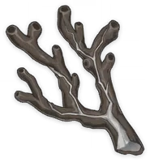
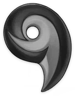
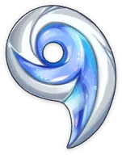
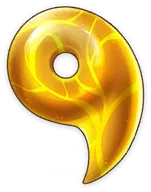
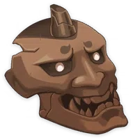
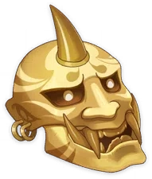

Coral Branch of a Distant Sea
Weapon Ascension Material.
Watatsumi Island is the furthest from Narukami Island in
the Inazuman island chain, and its name means "the god of
the oceans" in the island's ancient tongue. Legend has it
that when the great serpent first arose within the abyssal
nation of ever-night, its fluorescent body was covered in
myriad-colored coral.
Jeweled Branch of a Distant Sea


Weapon Ascension Material.
This coral cannot be found anywhere in Teyvat, but was a
gift that the great serpent obtained when it broke into the
Dark Sea. For that abyssal snake, to be filled with coral
was to be mighty, and its power would be shaved away as
those corals were lost. In other words, those corals
contain power far beyond the norm.
Jade Branch of a Distant Sea
Weapon Ascension Material.
Fleeing into the Dark Sea, the god that had lost everything
met the abandoned people who had nothing within the ocean
depths. Thus it elected to remain and become their
"Orobashi no Mikoto," their "Watatsumi Omikami."
It is said that the great snake god once broke off all the
coral branches on its body to give light to the children
who were curled up in the darkness. They also say that it
used these coral branches to create a huge ladder to allow
those children to once again reach the surface and see the
light of day.
Golden Branch of a Distant Sea
Weapon Ascension Material.
The meaning that lies behind the name "Watatsumi" is simply
the unrequited hopes that the abandoned people who dwelt in
the deep sea pinned upon the serpent god that led them.
And it was also because the serpent god now had people who
worshiped it that it stayed in the world it should have
long fled, breaking off the coral branches that adorned its
body, treading upon land where it should not have, and
facing a foe it could never hope to match — till at last,
its divine form was sundered along with the mountains, its
ichor turned into plasma, and its will and power became a
curse that could never be extinguished: Tatarigami.
Narukami's Wisdom
Weapon Ascension Material.
In the past, the ancients would climb the peak now known as
Mt. Yougou and bend wood that had been charred by lightning
into a hook to offer as an effigy unto the thundering force
that lit up the skies and shook the earth. This shape would
eventually become the "Electro Mitsudomoe" symbol,
symbolizing the favor, wisdom, and might of Electro, and
also the people who represent these values.
Narukami's Joy

Weapon Ascension Material.
Those who belong to the Shogunate Commissions are those who
administer and exercise power. In the monster-filled tales
of the ancient past, those who were deeply trusted by the
Shogun would bear talismans with this hooked design on
their person, and just as the word "commission" means to
"joyfully serve" in the old tongue, those who received her
favor would return it with love and loyalty. Yet, after a
certain point in time, nothing would be as it was before.
Narukami's Affection


Weapon Ascension Material.
All demons who wander in the wilderness or live amongst
mortals will be attracted by the sight of the Almighty
Narukami Ogosho, represented by the Electro Mitsudomoe.
Though their lives may be longer than any creature, they
will at last come to their end. If those with limited
lifespans hanker after eternity, then they can only pray
that "Eternity" remembers them. And she did indeed answer
their prayers, remembering them all, friend and foe alike,
in her heart. No matter whether it was the demon owls who
resided amidst the fog and ripped through the skies, the
bake-danuki who dared to trespass her imperial gardens, or
that female oni, lovely as the moon and mighty in battle,
yet who would eventually come to blows with her... Whether
it was the tengu who soared on dark wings or the Kitsune
Saiguu who once walked by her side, but who eventually
disappeared forever...
These countless tales have come to rest within her heart,
and someday, they will surely shine again in the eternal
paradise of her dreams.


Narukami's Valor


Weapon Ascension Material.
The treasure of the lord of thunder is her majesty, and
that majesty is embodied in her valor and wrath. Her wrath
comes from the love that persists in her heart, and her
valor supports that anger. Thus, whomsoever should block
the path towards eternity or lay a finger on Inazuma's
people shall become her foe.
They say that there were four great spirits, three divine
foxes, and two great swords — but that the symbol of Her
Excellency, the Almighty Narukami Ogosho, could only be a
single strike, unsurpassed and brilliant as a meteor.
Mask of the Wicked Lieutenant


Weapon Ascension Material.
Folktales tell that once upon a time, there lived an oni
named Torachiyo. Torachiyo was a highly skilled warrior,
such that it was once said the Torachiyo might dance amid a
thousand blades, juunihitoe robes becoming shredded like
falling violet petals, and yet not receive a single wound.
Yet this oni would eventually betray the Shogun and revolt,
becoming shorn of an arm and a horn in the battle before
fleeing and slaying itself in a fit of furious madness.
Hearsay holds that the stubborn oni often hold fear and
distress in their hearts. That they should fantasize about
eternity yet fear the moment, and are apt to become
swallowed by terror or anger is their just reward. This
mask depicts Torachiyo, fangs bared.
Mask of the Tiger's Bite
Weapon Ascension Material.
"Sumirezome Sangetsu Kogetsukan" depicts the fierce oni
Torachiyo shattering the Shogun's naginata with a single
bite, thus gaining the upper hand for a time. As such,
masks that are based on him have finely crafted fangs.
In the denouement of this tale, the wounded oni fled into
the forest, deathly afraid of showing himself even to the
cold moonlight. The wind that whispers through the alleys
and valleys can be said to resemble his quiet cries of
agony, and so there is a poetic seasonal expression for
this in Inazuma: "Torachiyo's Wind."
Mask of the One-Horned
Weapon Ascension Material.
In the lost songs of the oni nursemaids, Torachiyo was an
elegant young man, strong of body and fair of face. He was
once a beloved lieutenant of the Shogun, and he followed
her into the dark abyssal realms to repel the defiled ones,
winning renown for the oni, whose blood thinned with each
passing day.
None now sing these songs, but the mask of a horned oni,
even in a different form, still possesses power beyond the
norm.
Mask of the Kijin

Weapon Ascension Material.
Chiyo, a warrior of the oni tribe with the Electro
Mitsudomoe emblem emblazoned on her back, was once
swallowed whole by a beast from beyond this world that had
a tiger's body and a serpent's tail while holding back the
forces of darkness. At last, she tore the creature's
innards apart from within, breaking free.
This is the origin of the phrase "Chiyo the Tiger-Bite,"
and would be changed over many years to "Torachiyo."
But within the belly of the beast, she was stained by a
deep sin and saw her comrades ripped to shreds by those
blood-red teeth. Steeped in darkness as far as the eye
could see, she would eventually draw her sword upon the
Almighty Narukami Ogosho. Her sword-arm and one horn would
be cloven, and she would flee from the city into the forest
like a wounded beast. There, they say that she was taken
for some unknown monster and slain by the tengu, or perhaps
by the Shuumatsuban — or perhaps by a scion of the Iwakura
Clan training deep in the mountains, for her features had
been twisted by hatred and the agony of her wounds. Or
perhaps she even met the oni-masked, sword-bearing doll
near the corpse of the giant serpent, and there ended her
life's journey.
Few among those who fought against the abyss in those days
were spared pitch-dark dreams. Those who slew monsters and
then became them were hardly the minority. The border
between worlds grows fragile, and corruption of this kind
is perhaps not merely monodirectional.